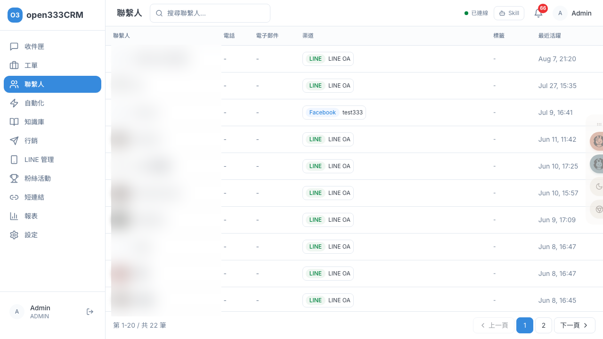

CHAPTER 03 · 日常客服作業
聯繫人
集中管理每一位客戶的基本資料、跨渠道身份、標籤與完整互動歷史。當同一個人有多筆重複資料時，可以合併成一筆。
1 功能總覽
「聯繫人」是所有客戶的名冊。它的核心價值是「以人為中心」把散落的往來收攏起來——同一個客戶可能今天用 LINE、明天從 Facebook 進來，聯繫人可以綁定他的多個渠道身份，累積跨渠道的對話、案件與標籤歷史。這樣客服接手時，能一眼看到「這個人過去跟我們發生過什麼」。
2 聯繫人列表
列表以表格呈現，可用右上搜尋框搜尋——搜尋會同時比對姓名、電話、Email三個欄位（不分大小寫、模糊比對）。每列顯示頭像與姓名、電話、Email、渠道身份、標籤、最近活躍時間。

ℹ️
列表預設排除純 WebChat 訪客（那些是尚未留下身份的匿名網頁訪客）與已封存的聯繫人，聚焦在有渠道身份的實際客戶。
3 聯繫人詳情與編輯
點列表中任一聯繫人進入詳情頁。左欄由上而下顯示客戶的完整資料：
| 區塊 | 內容 |
|---|---|
| 聯繫人資訊 | 頭像、姓名、電話、Email（可編輯） |
| 渠道身份 | 該客戶綁定的各渠道帳號（LINE / Facebook 等） |
| 自訂屬性 | 自訂的 key/value 資料（如會員等級、公司） |
| 標籤 | 可增刪的聯繫人標籤 |
編輯欄位的注意事項
- 姓名：不可存成空白。
- 電話：無格式限制，可填任意字或清空。
- Email：會驗證格式——填了非 email 格式（例如少了 @）會被擋下來，可留空。
4 活動時間軸
詳情頁右欄是以人為中心的全歷史時間軸，跨渠道倒序顯示這位客戶的所有互動——這跟工單的時間軸（單一工單的歷程）不同，它是「這個人跟我們往來的全貌」：
| 活動類型 | 時間軸顯示（範例） |
|---|---|
| 新對話 | 新對話 · LINE |
| 案件 | 建立案件「冰箱維修」· 處理中 |
| 案件事件 | 案件「冰箱維修」狀態：處理中 → 已解決 |
| 標籤 | 標籤「VIP」已加入 |
讓客服在回應前，能快速掌握這位客戶過去問過什麼、開過哪些案件、是不是重要客戶。無資料時顯示「尚無活動記錄」。
5 合併重複聯繫人
當同一個人被建立成多筆聯繫人（例如先用 LINE、後來又從 Facebook 進來，系統當成兩個人），會導致他的服務歷史散在兩處。「合併聯繫人」就是把它們併成一筆。詳情頁右上點「合併聯繫人」，三步驟完成。
先搞懂兩個角色（最重要）
| 角色 | 會發生什麼 |
|---|---|
| 主要聯繫人（保留） | 這筆留下來，來源的資料會搬進來 |
| 合併來源（併入後封存） | 資料搬走後，這筆本身被封存（不是硬刪，但使用者端等同消失） |
步驟 1
選擇合併對象
指定主要與來源；搜尋會自動排除自己、相同電話會標示
步驟 2
確認資料保留
用表格預覽渠道/對話/案件/標籤/屬性怎麼搬
步驟 3
確認合併
勾「我已確認並瞭解」後執行
各類資料怎麼搬（步驟 2 的預覽表）
| 資料 | 合併方式 |
|---|---|
| 渠道身份 / 對話 / 案件 | 全部搬到主要（累加，不會遺失） |
| 標籤 | 去重合併，來源獨有的才新增 |
| 自訂屬性 | 去重合併，但同名屬性以主要為準（來源不覆蓋） |
| 電話 / Email 等主要欄位 | 不會用來源覆蓋——維持主要原本的值 |
⚠️
合併對使用者而言無法復原（系統沒有「取消合併」入口）。且要特別注意：如果主要的電話/Email 是舊的、正確資料在來源身上，合併後仍會是主要的舊資料（主要欄位不被覆蓋）。所以選「誰當主要」時，要選基本資料較正確的那一筆。務必先在步驟 2 核對預覽再確認。
6 VIP 標籤的威力
聯繫人的標籤不只是分類——名為 vip（不分大小寫）的標籤有特殊作用：系統會把有此標籤的客戶判定為 VIP。搭配自動化規則，你可以對 VIP 客戶套用不同待遇，例如：
- VIP 來訊自動設為高優先級
- VIP 開案時直接通知主管
- VIP 對話跳過 Bot、直接轉真人
✨
把重要客戶打上「vip」標籤，就能在「04 · 自動化規則」用「聯絡人是 VIP」這個條件，對他們做差異化服務。這是聯繫人標籤與自動化串接的實用範例。